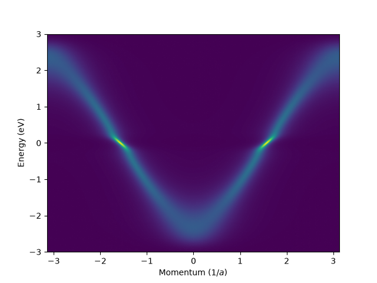

Spectral function
#!/usr/bin/env python3
import ebmb
import matplotlib.pyplot as plt
import matplotlib.image as img
import numpy as np
t = 1.0
dos = 'dos.in'
a2f = 'a2f.in'
ebmb.chain_dos(dos, de=1e-2, t=t)
ebmb.chain_a2F(a2f, dw=1e-3, l=1.0, wlog=0.1)
results = ebmb.get(
normal=True,
realgw=True,
dos=dos,
a2F=a2f,
lower=-3 * t,
upper=+3 * t,
resolution=501,
eta=0.01,
n=1.0,
T=700.0,
)
Sigma = results['Re[Sigma]'] + 1j * results['Im[Sigma]']
w = results['omega']
k = np.linspace(-np.pi, np.pi, 500, endpoint=False)
e = -2 * t * np.cos(k)
G = 1 / (w - e[:, np.newaxis] - Sigma)
A = -G.imag / np.pi
fig, ax = plt.subplots()
im = img.NonUniformImage(ax, interpolation='bilinear')
im.set_data(k, w, A.T)
ax.add_image(im)
plt.axis('auto')
plt.xlim(k[0], k[-1])
plt.ylim(w[0], w[-1])
plt.ylabel(r'Energy (eV)')
plt.xlabel(r'Momentum ($1 / a$)')
fig.savefig('specfun.png')
